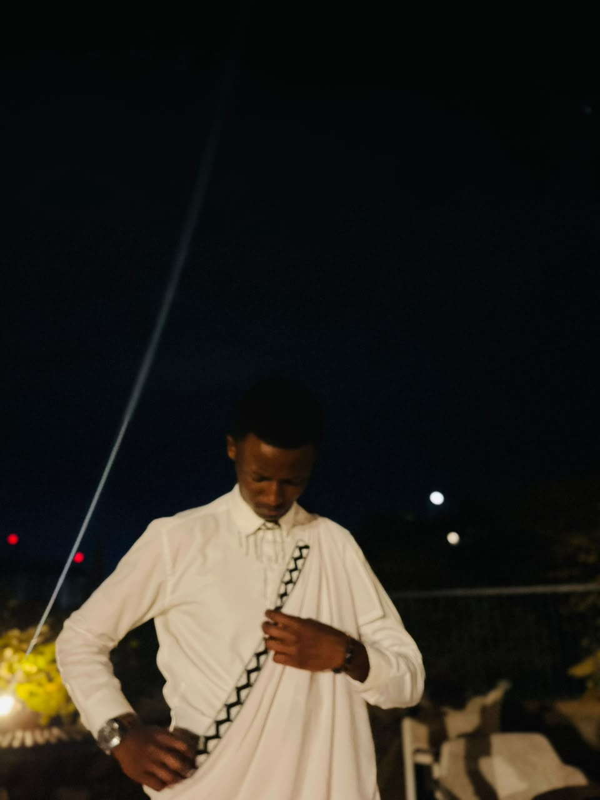

Les Sages presents
Care shouldn't stop at a signal bar or a stigma.
Therape is a dual-channel bridge to licensed mental health support for Rwandan youth and women survivors — reachable by smartphone in the city, and by a simple phone code from anywhere else.


Rwanda has made real gains in mental health policy. The gap left is one of reach — and that's the gap we're built for.
27.4%
of Rwandan youth report symptoms of significant psychological distress — most never reach a counselor.
2
access channels in one platform, so a rural health post and a smartphone lead to the same standard of care.
1
strategy: Therape is structured to align directly with Rwanda's National Strategic Plan for Mental Health.
The Problem
A crisis hiding in plain sight.
There is a serious mental health crisis among youth aged 14–25 and female genocide survivors in Rwanda, driven by intergenerational trauma, sexual and reproductive health issues, and family conflicts. A 2023 Rwanda Mental Health Survey revealed that 35% of the population suffers from major depressive disorder and 27.9% from PTSD. The prevalence of youth mental health disorders ranges from 10.2% to 20%.
Despite this, mental health awareness remains extremely low and services are largely unavailable at the community level. The Rwanda Biomedical Center (RBC) acknowledges a persistent treatment gap — even as Rwanda's National Mental Health Policy Framework and Strategic Plan (2023–2030) calls for equitable, community-based care.
For Rwanda to close this gap, mental health awareness programs and services must be active in all 30 districts by 2030.
Our Mission
“Championing equitable mental health across Rwanda by dismantling community-level treatment gaps through localized awareness programs and accessible, inclusive care for youth and females going through mental health crisis.”
35%
suffer from major depressive disorder
27.9%
live with PTSD
30
districts to reach by 2030


Who's on the other end
Every conversation reaches a licensed, vetted professional.
No anonymous chatbots standing in for care. Every therapist and counselor on Therape is credentialed, background-checked, and trained in trauma-informed practice specific to genocide survivorship and youth mental health.
They're based in Kigali and in the districts where our USSD line runs, so the person on the line understands the place you're calling from.
Meet the provider network →

What changes when help is actually reachable.
I dialed the code from my mother's phone when I couldn't sleep for three nights. Nobody at home knew I called. The counselor spoke Kinyarwanda and never once made me feel like a burden.
— Youth user, Nyamagabe District
Before Therape, referrals meant a paper form and a long wait. Now a client books a confidential slot at our health post directly, and I see her code, not her name, until she's in the room.
— Local health post provider, Southern Province
Les Sages
Meet the team.
The four of us built Therape to be the tool we wished existed.
Raymond
Team Lead & Clinical Strategy
Yanice
Product & Community Design
Brasen
Engineering & USSD Systems
Raika
Partnerships & Provider Network
In the field
Where the work happens.